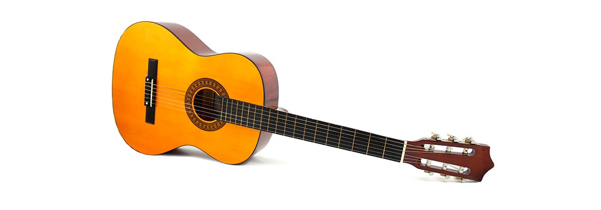

Електро-акустична гітара

Здається, що даний тип гітар нічим не відрізняється він акустичних гітар.
Проте на деці (зазвичай зверху) ви точно зможете побачити вмонтований процесор,
а внизу деки вихід для кабеля, який можна підключити до комбопідсилювача.

приклад процесора на електроакустичній гітарі